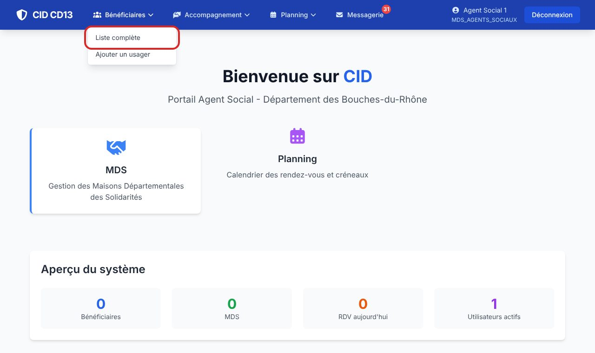
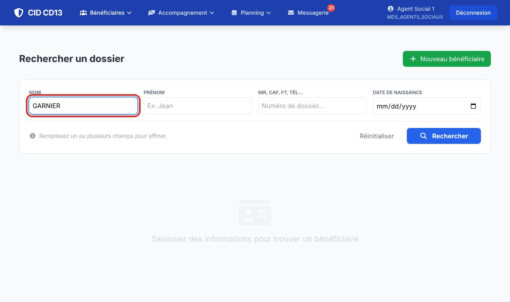
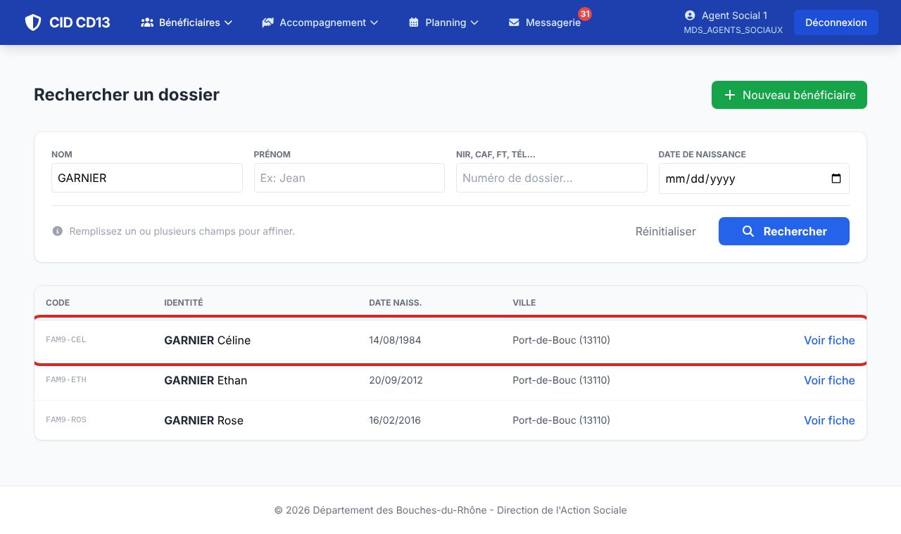
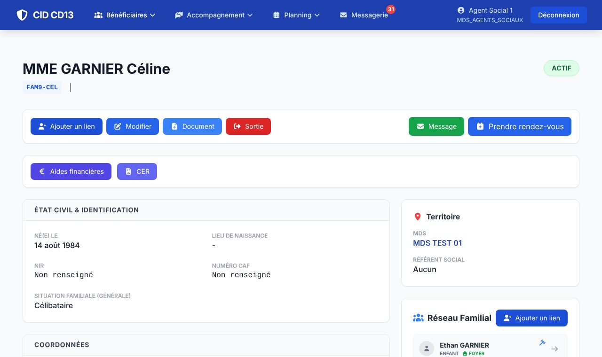

1Ouvrir la recherche

- Dans le menu, cliquez sur Bénéficiaires.
- Choisissez Liste complète.
2Saisir ce que l'on sait

- Tapez le nom de la personne.
- Vous pouvez affiner avec le prénom, la date de naissance, ou un numéro : NIR, n° CAF, n° France Travail, téléphone.
- Cliquez sur Rechercher (ou appuyez sur Entrée).
3Ouvrir la fiche


- Les personnes trouvées s'affichent avec leur code, leur date de naissance et leur ville.
- Cliquez sur la ligne de la personne : sa fiche s'ouvre.
- Aucun résultat ? Vérifiez l'orthographe ou essayez avec moins de critères avant de créer la personne.
Chaque bénéficiaire a un code interne (par exemple
FAM9-CEL ou BEN-B4DDZQ), affiché sous son nom. C'est le repère le plus sûr entre collègues.Bon à savoir
- Vous pouvez consulter la fiche d'un usager suivi par une autre MDS : l'identité, les coordonnées, le référent et la famille. Ses documents et ses aides restent réservés à sa MDS (voir Transférer un bénéficiaire).
- Les enfants et les conjoints ont aussi leur propre fiche : ils apparaissent dans la recherche.
Et ensuite ?
Cliquez sur une image pour l'agrandir. Le cadre rouge montre où cliquer ou quoi remplir. Toutes les données affichées sont fictives.